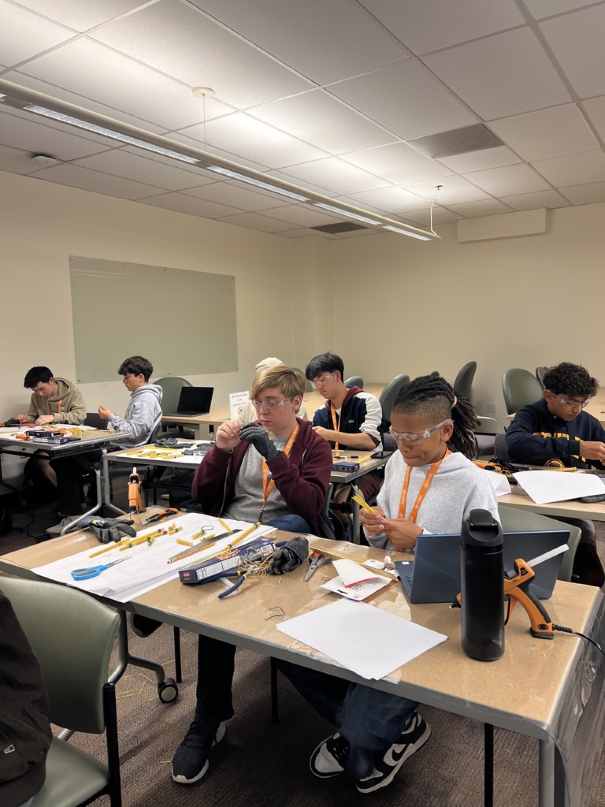
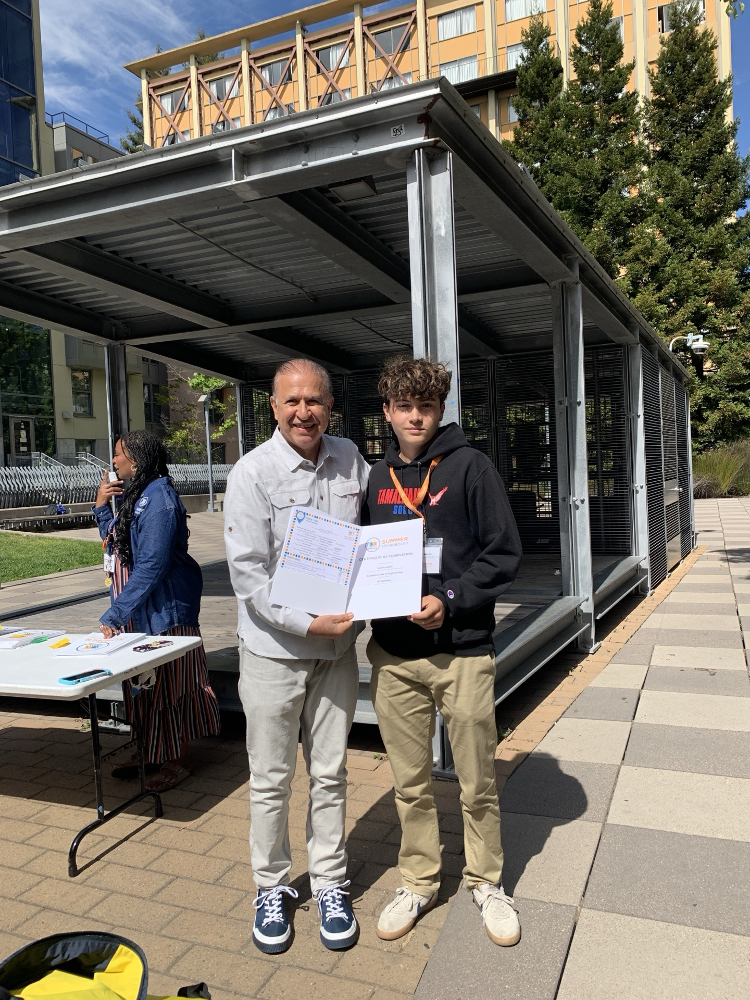
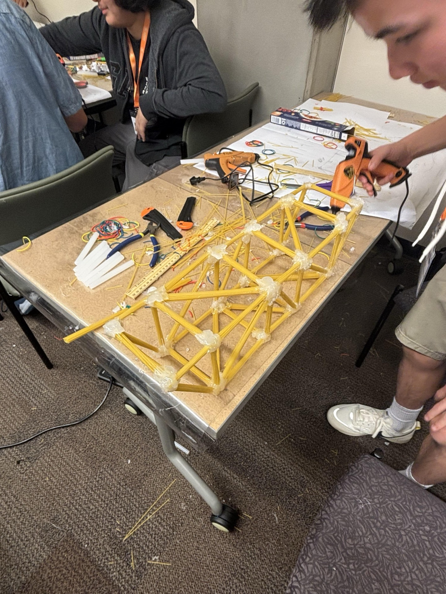
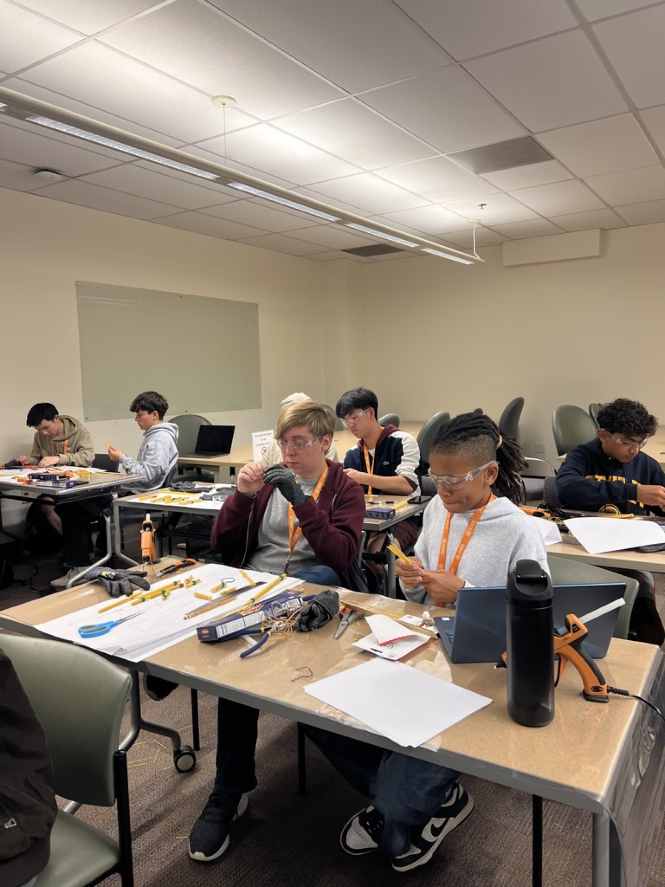
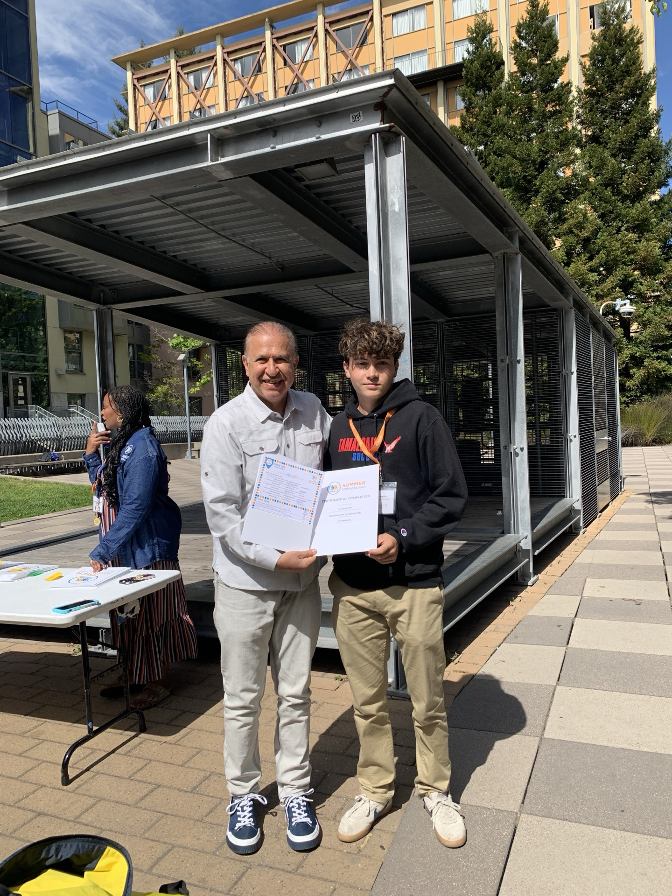
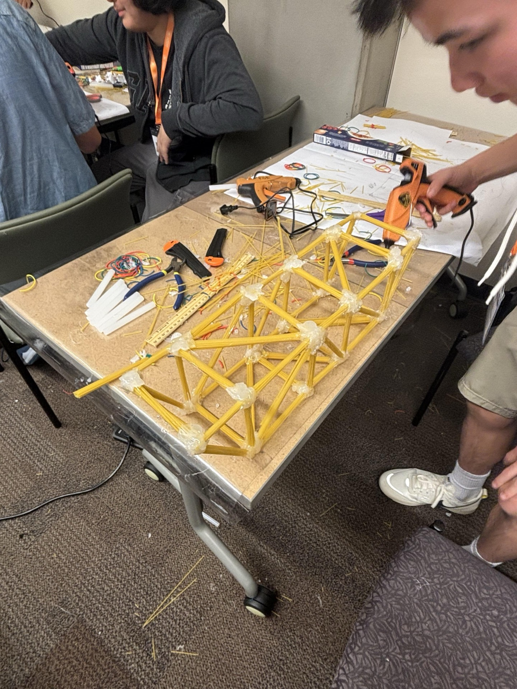

Summer School at UC Berkeley 2025
Introduction to Engineering
By Justin Merlin · August 16th, 2025
This summer, June 2025, I participated in the Intro to Engineering program at UC Berkeley, a hands-on experience designed for high school students. Throughout the program, we explored many important key concepts in the scientific method and engineering design. Throughout two weeks of work, we applied our learned knowledge through many projects.
One big highlight that I had was designing, building, and testing a bridge made entirely of spaghetti and glue, which taught us about structural design and material limits. It was a great introduction to the topic and was a blast to do.
Not only this, we also delved a little into the electronic field of engineering, gaining practical skills in circuits and components, overall to gain a better understanding of how electric circuits worked. Beyond the classroom, we had the opportunity to visit Tesla and a robotics company in the SF Bay Area, where we saw modern cutting-edge technology and engineering innovation in play. I enjoyed this very much.
I also enjoyed the visit to the UC Berkeley campus and Stanford near San Jose, which gave us a little taste of college life and how daily college life felt.
In summary, this experience greatly deepened my understanding of engineering principles, teamwork, and problem solving, and it inspired me to further explore the field of engineering and technology. Not only this, but I met many new amazing people that I will always stay in contact with.
 




